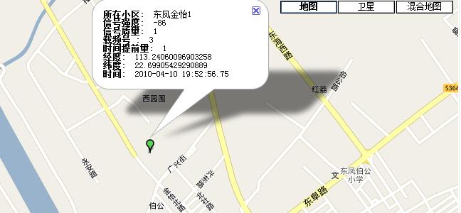
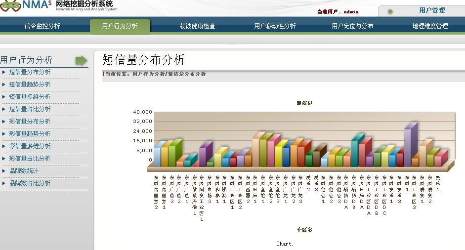
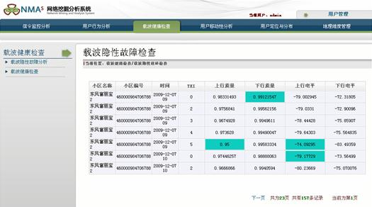
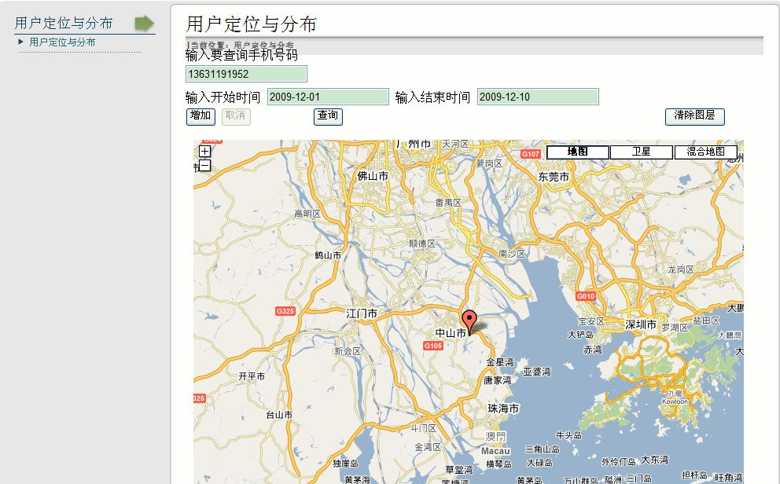
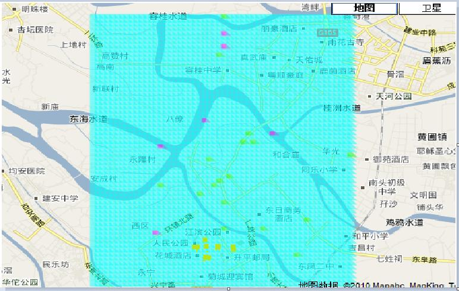

网络优化数据挖掘Network optimization and data mining
网络优化数据挖掘系统面向网优维护和业务发展的实际场景进行开发设计，以用户服务为中心，精细化网络运营管理，深化电信数据应用，为及时高效地解决网络故障、进行业务开展带来新途径。

1.信令监控分析
在网络挖掘分析系统中，基于A口信令数据和Abis口MR数据，进行信令解码,实现掉话的实时发现和用户掉话实时报告功能
关联信令数据和MR数据，利用MR数据进行定位，得到用户掉话的地理位置并进行地理呈现，对掉话区域进行分析
将信令数据和MR数据关联，对掉话时的载波质量性能特性进行综合分析
运营商通过该模块可以及时掌握用户在掉话方面的客户感知情况及位置，使客服人员在提前掌握相关信息地情况下能更好地提供服务，提高客户满意度；使网络运维人员在网络优化时能及时采取措施对网络进行改善覆盖等的优化，并为网络规划中载波相关参数设置提供依据。

2.用户行为分析
按时间维度、地理维度进行多维分析，灵活地跟据用户需求对不同地理粒度（小区/服务厅/分公司）时间粒度（日/月/年）的短信量、彩信量进行分布分析、涨幅趋势分析和占比分析呈现
统计分析某区域内指定号段的用户数，对一段时间和地理范围内四个品牌的占比进行呈现

3.载波健康检查
载波隐形故障将导致设备性能下降，影响设备正常运行指标，更严重的将导致设备无法正常工作，指标恶化，引起用户投诉，给公司品牌造成一定的影响。

4.用户定位分析
本新型移动台定位方案利用终端向基站上报的测量报告数据，获得服务小区和邻小区号，从服务小区和邻小区收到信号的接收电平等信息，结合实际小区的基站功率和定位模型，根据手机到服务基站和2个邻基站的距离，计算移动终端位置。

5.MR数据地理化呈现
MR数据中包含各通话的上下行电平、上下行质量等数据，本模块将结合本系统的移动台定位原理，实现MR数据的地理化呈现，可以协助维护、优化人员了解弱信号区域。
弱信号覆盖反映了网络布局的漏洞，弱信号覆盖区域容易引发用户通话掉话， 掉话情况反映了系统业务的通信保持能力，是用户直接感受的重要性能指标之一，本模块利于优化网络，保障用户通话质量。
(右图是处理完后在地图上呈现的某区范围内的信号覆盖状况，红色区域是覆盖盲区，淡绿区时覆盖比较弱的区域，其他为正常区域。)